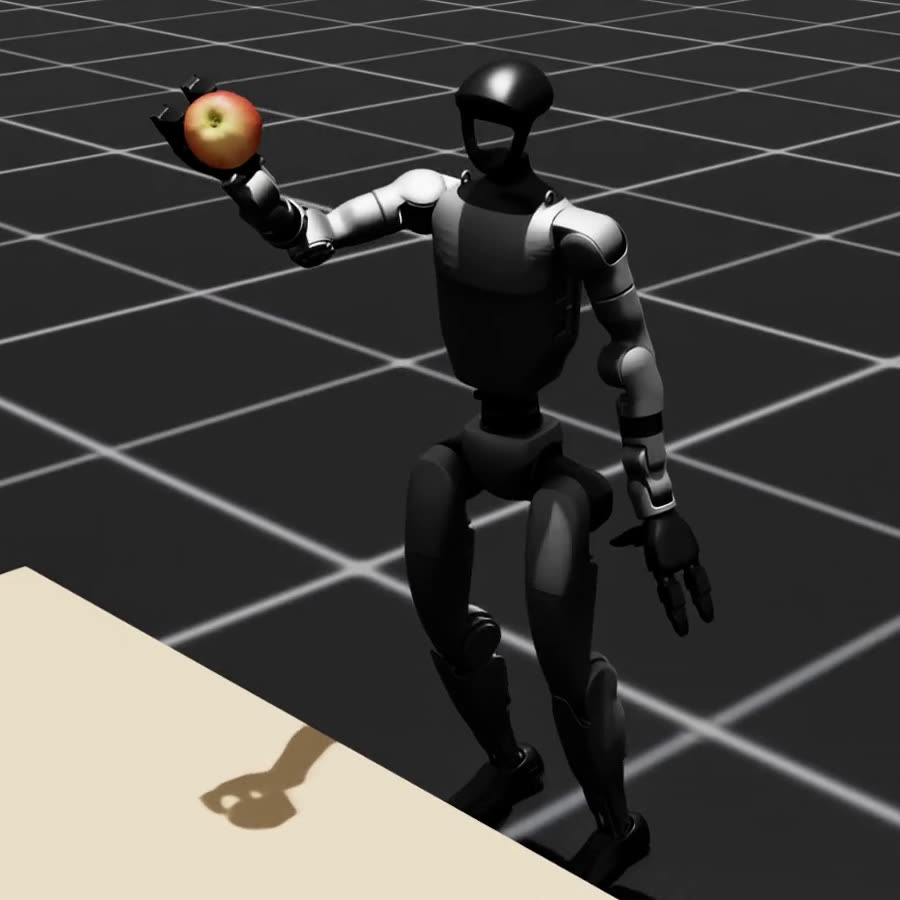
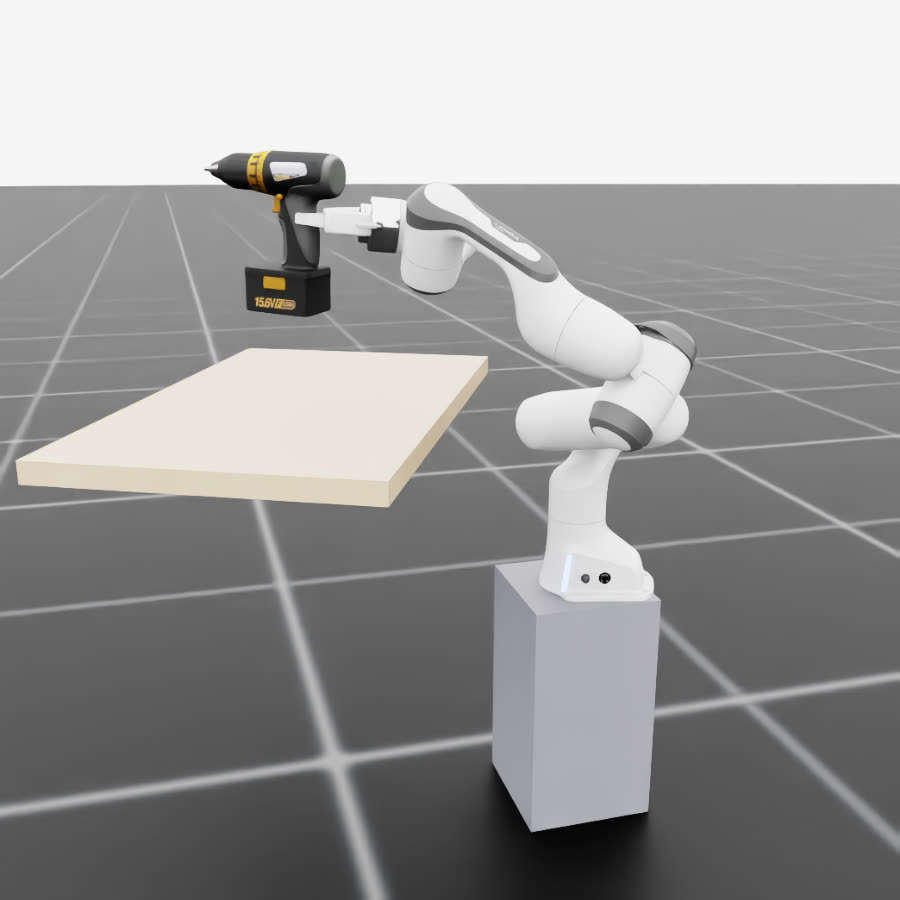

Research progress · 21 Oct – 20 Nov 2026 · one RTX 3090
GRAIL to Franka
I ran NVIDIA's GRAIL pipeline end to end on a video I generated myself, then moved it from the Unitree G1 humanoid to a Franka Panda arm with a two-finger gripper, checking every motion in physics simulation. Each week has its own page, newest first below.
GRAIL on my own video
Done
Scene, video, 4D reconstruction and G1 retargeting all run here. NVIDIA's trained policy lifts my drill in physics.
Franka Panda retargeting
Done for one motion
The kid's grasp moved onto the Franka gripper and verified in Isaac Lab: the drill is lifted 21 of 22 cm and held.
Arm placement, many objects
9 of 14 objects
One mount on the table picks up 9 of the 14 released objects that fit the gripper, checked in physics.
Franka drawn by the video model
0 of 6 work
Wan 2.2 either grows a new limb on the arm or moves the drill without touching it. The best video lifts nothing in physics.
Kid's hand copied onto the Franka
Close
At 3× slower and with 2 small fixes, the Franka lifts the drill 22.3 of 22.5 cm, but the drill swings in its fingers.
Wan video to Franka, simple tasks
Lift and place work
The Franka copies the drill's path with its own grasp, and reproduces every lift and place video so far in physics. Wan has not drawn a real turn yet. Still running.
Policy training
Not started
GRAIL's training setup expects 8 GPUs. Short training test runs passed on NVIDIA's data and mine.
My mentor's five questions: a scene with known numbers, Wan drawing the Franka itself (0 of 6 videos work), and the kid's hand copied onto the Franka (close, not a pass). Then more motions: copying the hand mostly fails because of the robot's body, so the Franka now copies what the drill does, with its own grasp. Lift and place work; Wan hasn't drawn a turn yet.
A sweep of 210 fixed mounts for my drill, an approach that no longer knocks the object over, and 14 of NVIDIA's released pickups: one mount on the table picks up 9 of them in physics.
GRAIL on a video I generated: scene, video, 4D reconstruction, the G1 retargeted, and NVIDIA's policy lifting my drill in physics. Then a new pipeline for the Franka Panda: the kid's grasp moved onto the two-finger gripper, lifting the drill 21 of 22 cm in Isaac Lab.
Each clip runs the whole pipeline side by side, about 5 seconds long. Clips play muted while on screen; use the controls to replay or go full screen.
GRAIL with the G1: generated video, 4D reconstruction, G1 reference motion, and the G1 in physics simulation with NVIDIA's policy.The same video with the Franka: generated video, 4D reconstruction, the Franka's planned motion, and the Franka in physics simulation.
The robots
Two robots, one task
GRAIL was built for a humanoid that copies the whole human body. I am moving it to a robot arm, which only needs the hand and the object. Both pictures come from my own simulation runs.

GRAIL's robot
Unitree G1 humanoid
A child-sized humanoid robot. GRAIL retargets the person's whole body onto it, so it walks up to the table, keeps its balance and grasps with a three-finger hand. NVIDIA's SONIC trains the policy that controls it.
Maker
Unitree Robotics
Size
about 1.3 m tall, 35 kg
Hands
three-finger dexterous hands
In simulation
43 joints: 29 body, 7 per hand
Controlled by
NVIDIA's SONIC policy in Isaac Lab

My robot
Franka Panda with Franka Hand
A widely used research arm with seven joints and the standard two-finger parallel gripper. It is fixed in place, so it does not walk or balance. It only needs to know where to grasp and how the object should move.
Maker
Franka Robotics (formerly Franka Emika)
Arm
7 joints, 855 mm reach, 3 kg payload
Gripper
two parallel fingers, opens 8 cm, 70 N grip
Base
fixed; here on a stand beside the table
In simulation
Isaac Lab's Panda model
Setup
How I run GRAIL on one machine
GRAIL assumes paid cloud services and a GPU cluster. Where it needed one, I swapped in a free or local option.
Part
GRAIL expects
What I use
Language and vision models: writing video prompts (step 2) and labeling which body parts touch the object (step 4)
OpenAI API with a paid key
CLIProxyAPI, a proxy running on my machine that sends the same OpenAI-style requests through a ChatGPT Plus account, as my mentor chose. GRAIL needed one small change: its model names now come from settings.